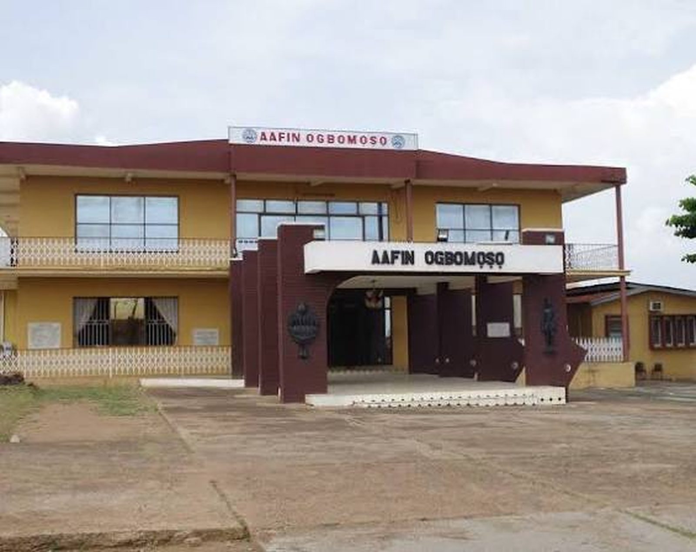
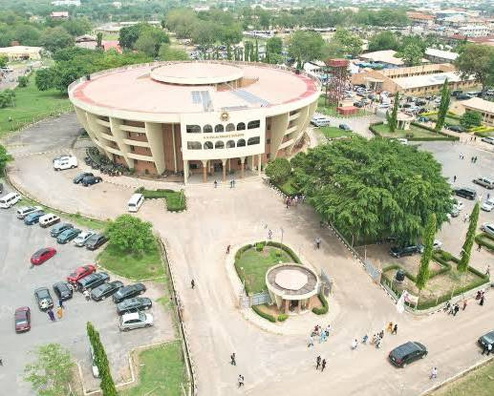
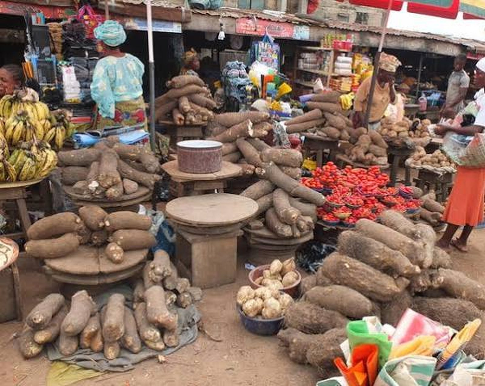

Aafin Ogbomoso (Soun’s Palace)
The traditional seat of the Soun of Ogbomoso and the centre of the town’s ceremonies and history. Ask permission before photographing inside the compound or of the Soun and his staff.
Places to visit in and around Ogbomoso North.

The traditional seat of the Soun of Ogbomoso and the centre of the town’s ceremonies and history. Ask permission before photographing inside the compound or of the Soun and his staff.

Home of the Ladoke Akintola University of Technology, named for Samuel Ladoke Akintola, an Ogbomoso son and Premier of the old Western Region. Follow campus security rules.

Ogbomoso’s trading life, with food crops, fabrics and household goods. Best visited in the morning.
Began as a Baptist mission hospital in 1907 and became a teaching hospital in 2009. A landmark of the town’s medical history.
One of the oldest institutions of higher learning in Nigeria, on Ilorin Road.

A yearly cultural festival that ends with Ajilete Day. See the Events page for dates.
Sources: Rex Clarke Adventures on the palace; BUTH history; Wikipedia: Ogbomosho
Owners of heritage sites, hotels and guides can ask to be listed after verification.